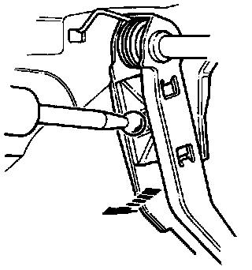
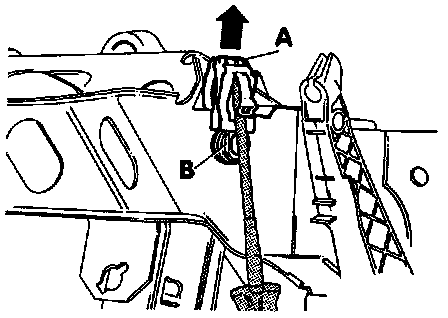

Pedal Cluster
Exploded View Of Pedal Cluster:

Component Notes And Information
NOTE:
^ During Service procedures, refer to the illustration above and the notes below
^ Brake pedal travel must not be restricted by floor mats or carpeting.
^ Lubricate all bushings and contact surfaces using MoS2 grease, Part No. G 000 602, or equivalent
^ Disconnect battery Ground (GND) strap when working on the pedal cluster.
1 Clip
- Pry out to remove clutch pedal, refer to Fig. 2 below
2 Clutch pedal
- Removing and installing, refer to Transmission and Drivetrain
3 Pedal cover
4 Bushing
5 Spring
6 Brake pedal
- Disconnect from brake booster to remove, refer to Removal Below
7 Pedal shaft
- Installed position, refer to Fig. 1 below
8 Vacuum vent valves
9 Bolt
- Tighten to: 20 Nm (15 ft lb)
10 Bracket
11 Brake light switch -F-
- To install:
Clip brake pedal to brake booster push rod
Pull switch plunger out
Push brake pedal down and hold
Guide switch into opening and turn 90° counterclockwise
Release brake pedal
Verify proper functioning of brake lights
12 Vacuum vent valve
13 Brake pedal clip
- Removing, refer to Removal below
14 Nut
- Tighten to: 20 Nm (15 ft lb)
15 Clip
16 Clip
17 Bracket
Procedures
Pedal Shaft Position:

Fig. 1 Installation Position Of Pedal Shaft
- Cut-down section (arrow) is on left-side.

Fig. 2 Removing Clutch Pedal
- Pry out clip tab using screwdriver (arrow -1-).
- Press clip in direction of arrow -2-.
Brake Pedal From Booster Rod Disconnecting:

Brake Pedal, Separating From Brake Booster
- Remove trim under instrument panel on left-side.
- Remove brake light switch from bracket.
- Push brake pedal toward vacuum brake booster, and hold.
1 - Brake pedal
2 - Push rod
3 - Mounting
- Install release tool 3289 and pull toward rear while holding brake pedal stationary (pedal must not move backward).
- Mounting -3- retaining tabs (arrows) will be pressed off ball head of push rod -2-.
NOTE: Tool and push rod detail shown with pedal cluster removed.
- Pull tool 3289 and brake pedal together toward rear.
- Brake pedal -1- will be pulled off ball-head of push rod -2-
Pedal To Booster Rod Connecting:

Connecting Brake Pedal And Push Rod
- Hold ball-head of push rod and move pedal in direction of arrow until parts lock together with an audible click.
Removal
- Remove over-center spring for clutch pedal, refer to Transmission and Drivetrain.
Brake Pedal Shaft Retaining Spring Removing:

- Insert Phillips-head screwdriver under tab -A-, press clip in direction of arrow.
NOTE: When installing the clip, make sure that surface -B- is vertical.
- Unhook spring from brake pedal.
- Pull out pedal shaft to left-side.
- Remove brake pedal.
Installation
- Install in reverse order of removal.